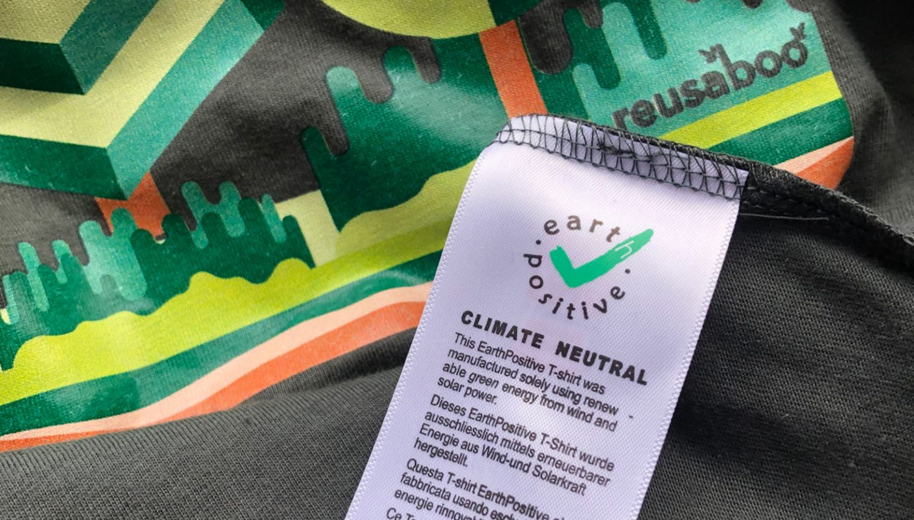

Earth Positive
Stay true to Earth with this European brand that offers top of the range retail-ready garments that match our core beliefs. Earth Positive garments are all made with 100% organic cotton, are Fair Wear & Carbon Neutral accredited and manufactured in India. The brand offers a broad range of fashion forward cuts, vintage washes, fabric blends & advanced marles.
The most progressive sustainable clothing on Earth. 100% Organic Products. EarthPositive® is produced exclusively from organic Indian cotton, and the entire production process is controlled and certified in accordance with the latest version of GOTS. All products are labelled as Organic.
Continental Clothing Company has been licensed under the Global Organic Standard (GOTS) since 2007. For the past five years the Company has been the largest organic textile licensee of the Soil Association.
Please watch this Video
Verified Ethical Manufacture
100% of the EarthPositive® production undergoes annual audits to comply with the FWF Code of Labour Practices in accordance with the International Labour Organisation’s conventions.
Continental Clothing Company has been a member of Fair Wear Foundation (FWF) since 2006.
90% Reduced Carbon Footprint
EarthPositive® is made in manufacturing facilities powered by green renewable energy, from low-impact raw materials. The carbon footprint of EarthPositive® products has been reduced by some 90% and the calculations were certified under the PAS2050 standard by the Carbon Trust in the UK between 2007-2009.
Our Factory
This vertically integrated garment factory in Tamil Nadu, Southern India, is the primary manufacturing facility of Continental Clothing Co.
The state-of-the-art technology and ultra-modern infrastructure provide the setting for the textile industry’s leading showcase of socially and environmentally responsible production.
Earth Positive Factory In India
Check Out Our Latest Earth Positive Catalogue.

See Our Colour Swatch Card!